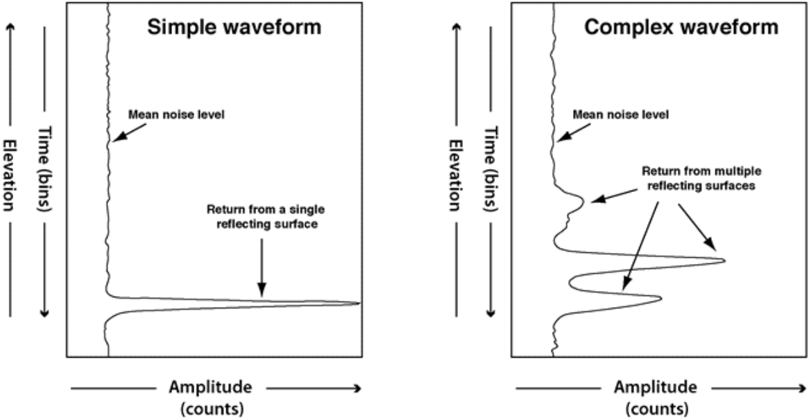

from glob import glob
import numpy as np
import pandas as pd
import earthaccess
import geopandas as gpd
import requests as re
import s3fs
import h5py
from os import path
from datetime import datetime
from shapely.ops import orient
from shapely.geometry import Polygon, MultiPolygon
import matplotlib.pyplot as plt
from shapely.geometry import box
import dill
from harmony import BBox,Client, Collection, Request, LinkTypeBIOSPACE25 Workshop:
Harnessing analysis tools for biodiversity applications using field, airborne, and orbital remote sensing data from NASA’s BioSCAPE campaign
Michele Thornton, Rupesh Shrestha, Erin Hestir, Adam Wilson, Jasper Slingsby, Anabelle Cardoso
Date: February 12, 2025, Frascati (Rome), Italy
Exploring and Visualizing BioSCape LVIS Data
Overview
BioSCape, the Biodiversity Survey of the Cape, is NASA’s first biodiversity-focused airborne and field campaign that was conducted in South Africa in 2023. BioSCape’s primary objective is to study the structure, function, and composition of the region’s ecosystems, and how and why they are changing.
BioSCape’s airborne dataset is unprecedented, with AVIRIS-NG, PRISM, and HyTES imaging spectrometers capturing spectral data across the UV, visible and infrared at high resolution and LVIS acquiring coincident full-waveform lidar. BioSCape’s field dataset is equally impressive, with 18 PI-led projects collecting data ranging from the diversity and phylogeny of plants, kelp and phytoplankton, eDNA, landscape acoustics, plant traits, blue carbon accounting, and more
This tutorial will demonstrate accessing and visualizing Land, Vegetation, and Ice Sensor (LVIS) data available on the BioSCape SMCE. LVIS is an airborne, wide-swath imaging full-waveform laser altimeter. LVIS collects in a 1064 nm-wavelength (near infrared) range with 3 detectors mounted in an airborne platform, flown typically ~10 km above the ground producing a data swath of 2km wide with 7-10 m footprints. More information about the LVIS instrument is here.
The LVIS instrument has been flown above several regions of the world since 1998. The LVIS flights were collected for the BioSCAPE campaigns from 01 Oct 2023 through 30 Nov 2023.
There are three LVIS BioSCape data products currently available and archived at NSIDC DAAC
| Dataset | Dataset DOI |
|---|---|
| LVIS L1A Geotagged Images V001 | 10.5067/NE5KKKBAQG44 |
| LVIS Facility L1B Geolocated Return Energy Waveforms V001 | 10.5067/XQJ8PN8FTIDG |
| LVIS Facility L2 Geolocated Surface Elevation and Canopy Height Product V001 | 10.5067/VP7J20HJQISD |
For this tutorial, we’ll examine the LVIS L2 Geolocated Surface Elevation and Canopy Height Product V001
- Citation: Blair, J. B. & Hofton, M. (2020). LVIS Facility L2 Geolocated Surface Elevation and Canopy Height Product, Version 1 [Data Set]. Boulder, Colorado USA. NASA National Snow and Ice Data Center Distributed Active Archive Center. https://doi.org/10.5067/VP7J20HJQISD.
- User Guide LVIS Facility L2 Geolocated Surface Elevation and Canopy Height Product, Version1
 Figure: Sample LVIS product waveforms illustrating possible distributions of reflected light (Blair et al., 2020)
# !pip install crepes dill xgboost pynndescent# esri background basemap for maps
xyz = "https://server.arcgisonline.com/ArcGIS/rest/services/World_Imagery/MapServer/tile/{z}/{y}/{x}"
attr = "ESRI"Authentication
We recommend authenticating your Earthdata Login (EDL) information using the earthaccess python library as follows:
# works if the EDL login already been persisted to a netrc
try:
auth = earthaccess.login(strategy="netrc")
except FileNotFoundError:
# ask for EDL credentials and persist them in a .netrc file
auth = earthaccess.login(strategy="interactive", persist=True)Structure LVIS L1B Geolocated Waveform
First, let’s find out how many L1B files from the BioSCape Campaign are published on NASA Earthdata.
doi="10.5067/XQJ8PN8FTIDG" # LVIS L1B doi
query = earthaccess.DataGranules().doi(doi)
query.params['campaign'] = 'bioscape'
l1b = query.get_all()
print(f'Granules found: {len(l1b)}')There are 2328 granules LVIS L1B product found for the time period. Let’s see if they are hosted on Earthdata cloud or not, by printing a summary of the first granule
l1b[0]As we see above, the LVIS files are not cloud-hosted yet. They have to be downloaded locally and use them. We will go ahead and use earthaccess python module to get the file directly and save it to the downloads directory.
# download files
downloaded_files = earthaccess.download(l1b[0], local_path="downloads")Now, we go ahead and open a file to look at its structure.
l1b_first = f'downloads/{path.basename(l1b[0].data_links()[0])}'
with h5py.File(l1b_first) as hf:
for v in list(hf.keys()):
if v != "ancillary_data":
print(f"- {v} : {hf[v].attrs['description'][0].decode('utf-8')}")with h5py.File(l1b_first) as hf:
l_lat = hf['LAT1215'][:]
l_lon = hf['LON1215'][:]
l_range = hf['Z1215'][:] # ground elevation
shot = hf['SHOTNUMBER'][:] # ground elevation
geo_arr = list(zip(shot, l_range,l_lat,l_lon))
l1b_df = pd.DataFrame(geo_arr, columns=["shot_number", "elevation", "lat", "lon"])
l1b_dfl1b_gdf = gpd.GeoDataFrame(l1b_df, crs="EPSG:4326",
geometry=gpd.points_from_xy(l1b_df.lon,
l1b_df.lat))
l1b_gdf.sample(frac=0.01).explore("elevation", cmap = "plasma", tiles=xyz, attr=attr)i = np.where(shot==1319816)[0][0]
with h5py.File(l1b_first) as hf:
rxwaveform = hf['RXWAVE'][i, :] # waveform
elev_1215 = hf['Z1215'][i] # elevation ground
elev_0 = hf['Z0'][i] # elevation top
c = len(rxwaveform) #
elev = np.linspace(elev_1215, elev_0, num=c)
# plot
plt.rcParams["figure.figsize"] = (3,10)
plt.xlabel("rxwaveform (counts)")
plt.ylabel("elevation (m)")
plt.plot(rxwaveform, elev, linestyle='--', marker='.',)
plt.show()Structure of LVIS L2 Canopy Height Product
First, let’s search how many L2 files are there for the BioSCape campaign dates.
doi="10.5067/VP7J20HJQISD" # LVIS L2 doi
query = earthaccess.DataGranules().doi(doi)
query.params['campaign'] = 'bioscape'
l2 = query.get_all()
print(f'Granules found: {len(l2)}')There are 2328 granules LVIS L2 product found for the time period. Let’s see if they are hosted on Earthdata cloud or not, by printing a summary of the first granule
l2[0]As we see above, the LVIS files are not cloud-hosted yet. They have to be downloaded locally and use them. We will go ahead and use earthaccess python module to get the file directly and save it to the downloads directory.
# download files
downloaded_files = earthaccess.download(l2[0], local_path="downloads")Now, we’ll go ahead and open a file to look at it’s structure.
l2_first = f'downloads/{path.basename(l2[0].data_links()[0])}'
with open(l2_first, 'rb') as f:
head = [next(f) for _ in range(15)]
print(head)LVIS L2A files have a number of lines as header as shown above. Let’s define a python function to read the number of header rows.
def get_line_number(filename):
"""find number of header rows in LVIS L2A"""
count = 0
with open(filename, 'rb') as f:
for line in f:
if line.startswith(b'#'):
count = count + 1
columns = line[1:].split()
else:
return count, columnsh_no, col_names = get_line_number(l2_first)
with open(l2_first, 'rb') as f:
l2a_df = pd.read_csv(f, skiprows=h_no, header=None, engine='python', sep=r'\s+')
l2a_df.columns = [x.decode() for x in col_names]
l2a_dfLet’s print LVIS L2 variable names.
l2a_df.columns.valuesKey variables: - The GLAT and GLON variables provide coordinates of the lowest detected mode within the LVIS waveform. - The RHXX variables provide height above the lowest detected mode at which XX percentile of the waveform energy. - RANGE provides the distance from the instrument to the ground. - SENSITIVITY provides sensitivity metric for the return waveform. - ZG,ZG_ALT1, ZG_ALT2: Mean elevation of the lowest detected mode using alternate 1/2 mode detection settings. The alternative ZG to use to adjust the RH parameters for local site conditions.
More information about the variables are provided in the user guide.
Let’s select the particular shot we are interested in.
l2a_shot_df = l2a_df[l2a_df['SHOTNUMBER'] == 1319816]
l2a_shot_dfNow, we can plot the RH metrics with elevation.
elev_zg = l2a_shot_df.ZG.values[0]
elev_zh = l2a_shot_df.ZH.values[0]
rh40 = l2a_shot_df.RH40.values[0]
rh80 = l2a_shot_df.RH80.values[0]
rh100 = l2a_shot_df.RH100.values[0]
rh = l2a_shot_df.filter(like ='RH').drop('CHANNEL_RH', axis=1).values.tolist()[0]
# plotting
plt.rcParams["figure.figsize"] = (5,7)
rh_vals = l2a_shot_df.filter(like = 'RH').columns[:-1].str.strip('RH').astype(int).tolist()
fig, ax1 = plt.subplots()
ax1.plot(rh_vals, elev_zg+rh, alpha=0.3, marker='o', color='black', label='RH metrics' )
ax1.axhline(y=elev_zg+rh40, color='g', linestyle='dotted', linewidth=2, label='RH40')
ax1.axhline(y=elev_zg+rh80, color='g', linestyle='-.', linewidth=2, label='RH80')
ax1.axhline(y=elev_zg+rh100, color='g', linestyle='--', linewidth=3, label='RH100')
ax1.set_xlabel("Percentile of waveform energy (%)")
ax1.set_ylabel("elevation (meters)")
ax1.legend(loc="lower right")
plt.show()Plot LVIS Bioscape Campaigns
Lets first define two functions that we can use to plot the search results above over a basemap.
def convert_umm_geometry(gpoly):
"""converts UMM geometry to multipolygons"""
multipolygons = []
for gl in gpoly:
ltln = gl["Boundary"]["Points"]
points = [(p["Longitude"], p["Latitude"]) for p in ltln]
multipolygons.append(Polygon(points))
return MultiPolygon(multipolygons)
def convert_list_gdf(datag):
"""converts List[] to geopandas dataframe"""
# create pandas dataframe from json
df = pd.json_normalize([vars(granule)['render_dict'] for granule in datag])
# keep only last string of the column names
df.columns=df.columns.str.split('.').str[-1]
# convert polygons to multipolygonal geometry
df["geometry"] = df["GPolygons"].apply(convert_umm_geometry)
# return geopandas dataframe
return gpd.GeoDataFrame(df, geometry="geometry", crs="EPSG:4326")Now, we will convert the JSON return from the earthaccess granule search into a geopandas dataframe so we could plot over an ESRI basemap.
gdf = convert_list_gdf(l2)
#plot
gdf[['BeginningDateTime','geometry']].explore(tiles=xyz, attr=attr)The above shows the flight lines of all LVIS collection during the BioSCape campaign in 2023.
Search LVIS L2A granules over a study area
The study area is Brackenburn Private Nature Reserve.
poly_f = "assets/brackenburn.json"
poly = gpd.read_file(poly_f)
poly.explore(tiles=xyz, attr=attr, style_kwds={'color':'red', 'fill':False})Let’s search for LVIS L2A granules that are within the bounds of the study area.
poly.geometry = poly.geometry.apply(orient, args=(1,))
# simplifying the polygon to bypass the coordinates
# limit of the CMR with a tolerance of .005 degrees
xy = poly.geometry.simplify(0.005).get_coordinates()
granules = earthaccess.search_data(
count=-1, # needed to retrieve all granules
doi="10.5067/VP7J20HJQISD", # LVIS L2A doi
temporal=("2023-10-01", "2023-11-30"), # Bioscape campaign dates
polygon=list(zip(xy.x, xy.y))
)
print(f'Granules found: {len(granules)}')Let’s check when these LVIS flights were flown.
gdf = convert_list_gdf(granules)
gdf['BeginningDateTime'] = pd.to_datetime(gdf['BeginningDateTime'])
gdf_daily = gdf.resample(rule='D', on='BeginningDateTime')['concept-id'].nunique()
gdf_daily.index = pd.to_datetime(gdf_daily.index).date
gdf_daily.plot(kind="bar", xlabel="Day of Flight", ylabel="No. of flights")
plt.show()Let’s plot these flight lines over a basemap.
m = gdf[['BeginningDateTime','geometry']].explore(tiles=xyz, attr=attr,
style_kwds={'fillOpacity':0.1})
mDownload L2 granules
In the above section, we retrieved the overlapping granules using the earthaccess module, which we will also use to download the files.
downloaded_files = earthaccess.download(granules, local_path="downloads")Earthaccess download uses a parallel downloading feature so all the files are downloaded efficiently. It also avoids duplicated downloads if a file has already been downloaded previously to the local path.
Read LVIS L2A Files
Now, we can read the LVIS L2A files into a pandas dataframe.
# read the LVIS L2A files
lvis_l2a = []
for s in gdf.index:
f = path.join('downloads', path.basename(granules[s].data_links()[0]))
h_no, col_names = get_line_number(f)
temp_df = pd.read_csv(f, skiprows=h_no, header=None,
engine='python', sep=r'\s+')
temp_df.columns = [x.decode() for x in col_names]
temp_gdf = gpd.GeoDataFrame(temp_df,
geometry=gpd.points_from_xy(temp_df.GLON,
temp_df.GLAT),
crs="EPSG:4326")
temp_sub = gpd.sjoin(temp_gdf, poly, predicate='within')
if not temp_sub.empty:
print(f'Subsetting {path.basename(f)}')
lvis_l2a.append(temp_sub)
lvis_l2a_gdf = pd.concat(lvis_l2a)Height of Top Canopy
Let’s plot RH100 (height of top canopy) values in a map.
lvis_l2a_gdf[['RH100', 'geometry']].sample(frac=0.1, random_state=1).explore(
"RH100", cmap = "YlGn", tiles=xyz, attr=attr, alpha=0.5, radius=10, legend=True)Relative Height Distribution
We can generate a plot of RH metrics to check if the vegetation height across the percentile of waveform energy indicates the same.
fig, ax = plt.subplots(figsize=(7, 8))
plot_df = lvis_l2a_gdf.sample(frac=0.1, random_state=1).filter(like='RH').drop('CHANNEL_RH', axis=1).T
plot_df.index = plot_df.index.str.strip('RH').astype(int)
std_df = plot_df.std(axis=1)
median_df = plot_df.median(axis=1)
median_df.plot(ax=ax, alpha=0.5, style='o-')
ax.fill_between(plot_df.index, median_df - std_df, median_df + std_df, alpha=0.1)
ax.set_xlabel("Percentile of waveform energy (%)")
ax.set_ylabel("Height (m)")
plt.show()# exporting
# lvis_l2a_gdf.geometry.to_file('lvis2.geojson', driver="GeoJSON")
# lvis_l2a_gdf.to_csv('lvis.csv')GEDI L2A Canopy Height Metrics
This section of the tutorial will demonstrate how to directly access and subset the GEDI L2A canopy height metrics using NASA’s Harmony Services and compute a summary of aboveground biomass density for a forest reserve. The Harmony API allows seamless access and production of analysis-ready Earth observation data across different DAACs by enabling cloud-based spatial, temporal, and variable subsetting and data conversions. The GEDI datasets are available from the Harmony API.
We will use NASA’s Harmony Services to retrieve the GEDI L2A dataset and canopy heights (RH100) for the burned and unburned plots . The Harmony API allows access to selected variables for the dataset within the spatial-temporal bounds without having to download the whole data file.
Dataset
The GEDI Level 2A Geolocated Elevation and Height Metrics product GEDI02_A provides waveform interpretation and extracted products from eachreceived waveform, including ground elevation, canopy top height, and relative height (RH) metrics. GEDI datasets are available for the period starting 2019-04-17 and covers 52 N to 52 S latitudes. GEDI L2A data files are natively in HDF5 format.
Authentication
NASA Harmony API requires NASA Earthdata Login (EDL). You can use the earthaccess Python library to set up authentication. Alternatively, you can also login to harmony_client directly by passing EDL authentication as the following in the Jupyter Notebook itself:
harmony_client = Client(auth=("your EDL username", "your EDL password"))Create Harmony Client Object
First, we create a Harmony Client object. If you are passing the EDL authentication, please do as shown above with the auth parameter.
harmony_client = Client()Retrieve Concept ID
Now, let’s retrieve the Concept ID of the GEDI L2A dataset. The Concept ID is NASA Earthdata’s unique ID for its dataset.
def get_concept_id(doi):
"""get concept id from DOI using CMR API"""
doisearch = f'https://cmr.earthdata.nasa.gov/search/collections.json?doi={doi}'
return re.get(doisearch).json()['feed']['entry'][0]['id']
concept_l2a = get_concept_id('10.5067/GEDI/GEDI02_A.002') # GEDI L2A DOI
print(f"{concept_l2a}")Define Request Parameters
Let’s create a Harmony Collection object with the concept_id retrieved above. We will also define the GEDI L2A RH variables and temporal range.
# harmony collection
collection_l2a = Collection(id=concept_l2a)
def create_var_names(variables):
# gedi beams
beams = ['BEAM0000', 'BEAM0001', 'BEAM0010', 'BEAM0011', 'BEAM0101', 'BEAM0110', 'BEAM1000', 'BEAM1011']
# combine variables and beam names
return [f'/{b}/{v}' for b in beams for v in variables]
# gedi variables
variables_l2a = create_var_names(['rh', 'quality_flag', 'land_cover_data/pft_class'])
# time range
temporal_range = {'start': datetime(2019, 4, 17),
'stop': datetime(2023, 3, 31)}Create and Submit Harmony Request
Now, we can create a Harmony request with variables, temporal range, and bounding box and submit the request using the Harmony client object. We will use the download_all method, which uses a multithreaded downloader and returns a concurrent future. Futures are asynchronous and let us use the downloaded file as soon as the download is complete while other files are still being downloaded.
def submit_harmony(collection, variables):
"""submit harmony request"""
request = Request(collection=collection,
variables=variables,
temporal=temporal_range,
shape=poly_f,
ignore_errors=True)
# submit harmony request, will return job id
subset_job_id = harmony_client.submit(request)
return harmony_client.result_urls(subset_job_id, show_progress=True,
link_type=LinkType.s3)
results = submit_harmony(collection_l2a, variables_l2a)A temporary S3 Credentials is needed for read-only, same-region (us-west-2), direct access to S3 objects on the Earthdata cloud. We will use the credentials from the harmony_client.
s3credentials = harmony_client.aws_credentials()We will pass S3 credentials to S3Fs class S3FileSystem.
fs_s3 = s3fs.S3FileSystem(anon=False,
key=s3credentials['aws_access_key_id'],
secret=s3credentials['aws_secret_access_key'],
token=s3credentials['aws_session_token'])Read Subset files
First, we will define a python function to read the GEDI variables, which are organized in a hierarchical way.
def read_gedi_vars(beam):
"""reads through gedi variable hierarchy"""
col_names = []
col_val = []
# read all variables
for key, value in beam.items():
# check if the item is a group
if isinstance(value, h5py.Group):
# looping through subgroups
for key2, value2 in value.items():
col_names.append(key2)
col_val.append(value2[:].tolist())
else:
col_names.append(key)
col_val.append(value[:].tolist())
return col_names, col_valLet’s direct access the subsetted h5 files and retrieve its values into the pandas dataframe.
# define an empty pandas dataframe
subset_df = pd.DataFrame()
# loop through the Harmony results
for s3_url in results:
print(s3_url)
with fs_s3.open(s3_url, mode='rb') as fh:
with h5py.File(fh) as l2a_in:
for v in list(l2a_in.keys()):
if v.startswith('BEAM'):
c_n, c_v = read_gedi_vars(l2a_in[v])
# Appending to the subset_df dataframe
subset_df = pd.concat([subset_df,
pd.DataFrame(map(list, zip(*c_v)),
columns=c_n)])Let’s remove the duplicate columns, if any, and print the first two rows of the pandas dataframe.
# remove duplicate columns
subset_df = subset_df.loc[:,~subset_df.columns.duplicated()].copy()
subset_df.head(2)RH metrics
Let’s first split the rh variables into different columns. There are a total of 101 steps of percentiles defined starting from 0 to 100%.
# create rh metrics column
rh = []
# loop through each percentile and create a RH column
for i in range(101):
y = pd.DataFrame({f'RH{i}':subset_df['rh'].apply(lambda x: x[i])})
rh.append(y)
rh = pd.concat(rh, axis=1)
# concatenate RH columns to the original dataframe
subset_df = pd.concat([subset_df, rh], axis=1)
# print the first row of dataframe
subset_df.head(2)gedi_gdf = gpd.GeoDataFrame(subset_df,
geometry=gpd.points_from_xy(subset_df.lon_lowestmode,
subset_df.lat_lowestmode),
crs="EPSG:4326")
gedi_sub = gpd.sjoin(gedi_gdf, poly, predicate='within')
gedi_sub[gedi_sub.quality_flag==1].explore("RH100", cmap = "YlGn", tiles=xyz, attr=attr, alpha=0.5, radius=10, legend=True)fig, ax = plt.subplots(figsize=(7, 10))
plot_df = gedi_sub[gedi_sub.quality_flag==1].filter(like='RH').T
plot_df.index = plot_df.index.str.strip('RH').astype(int)
plot_df.median(axis=1).plot(ax=ax, alpha=0.5, style='s:')
ax.set_xlabel("Percentile of waveform energy (%)")
ax.set_ylabel("Height (m)")
plt.show()GEDI Waveform Structural Complexity Index (WSCI)
GEDI WSCI product (GEDI L4C) provides inference on forest structural complexity, which affects ecosystem functions, nutrient cycling, biodiversity, and habitat quality (Tiago et al. 2024)
concept_l4c = get_concept_id('10.3334/ORNLDAAC/2338') # GEDI L4C DOI
# harmony collection
collection_l4c = Collection(id=concept_l4c)
# gedi variables
variables_l4c = create_var_names(['wsci'])
# define an empty pandas dataframe
subset_df2 = pd.DataFrame()
# submit harmony
results2 = submit_harmony(collection_l4c, variables_l4c)
# loop through the Harmony results
for s3_url in results2:
print(s3_url)
with fs_s3.open(s3_url, mode='rb') as fh:
with h5py.File(fh) as l4c_in:
for v in list(l4c_in.keys()):
if v.startswith('BEAM'):
c_n, c_v = read_gedi_vars(l4c_in[v])
# Appending to the subset_df dataframe
subset_df2 = pd.concat([subset_df2,
pd.DataFrame(map(list, zip(*c_v)),
columns=c_n)])# remove duplicate columns
subset_df2 = subset_df2.loc[:,~subset_df2.columns.duplicated()].copy()
gedi_gdf2 = gpd.GeoDataFrame(subset_df2,
geometry=gpd.points_from_xy(subset_df2.lon_lowestmode,
subset_df2.lat_lowestmode),
crs="EPSG:4326")
gedi_sub2 = gpd.sjoin(gedi_gdf2, poly, predicate='within')
gedi_sub2[gedi_sub2.quality_flag==1].explore("WSCI", cmap = "YlGn", tiles=xyz, attr=attr, alpha=0.5, radius=10, legend=True)